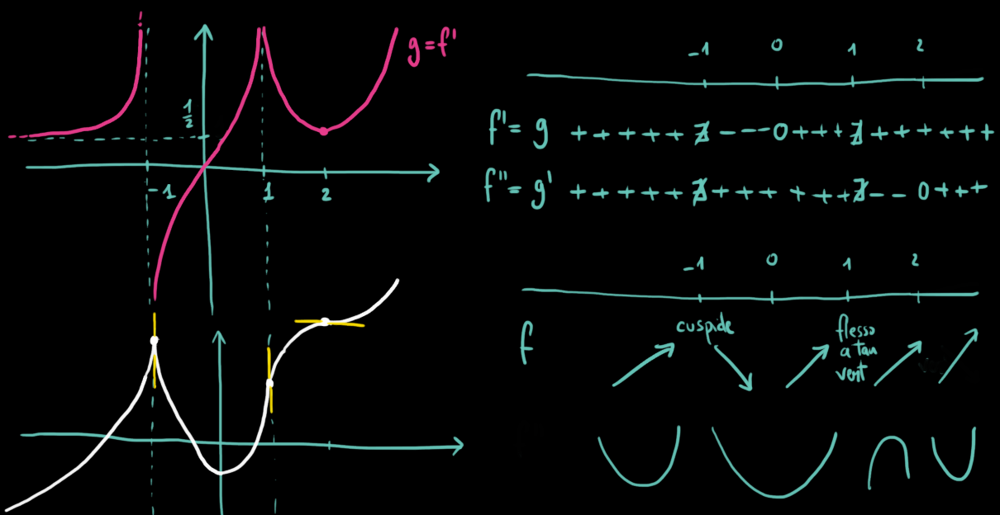
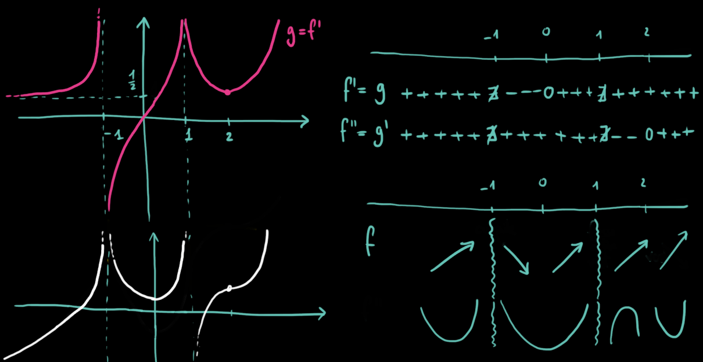

Compiti per casa
⚠️⚠️⚠️
Sto scrivendo le soluzioni di quanti più esercizi possibile. Vi scrivo su Teams non appena
le carico qua sulla pagina.
Esercizio 1
-
Studiare l'esercizio guida n° 390 alle pagg. 1894 ed 1895.
-
Svolgere gli esercizi n° 391, 392, 393, 394, 395, 396 a pag. 1895.
Svolgimento n° 391
Svolgimento n° 392
Svolgimento n° 393
Svolgimento n° 394
Soluzioni n° 395
Prima possibilità

Seconda possibilità

Esercizio 2
Svolgere gli esercizi n° 240, 241 a pag. 2046.